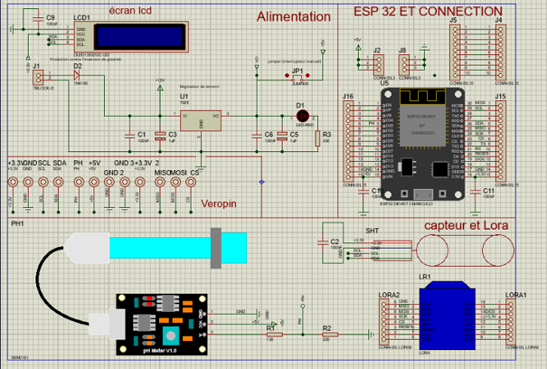
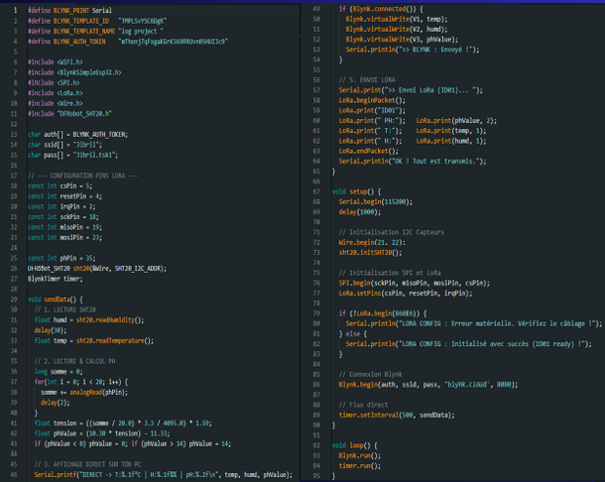
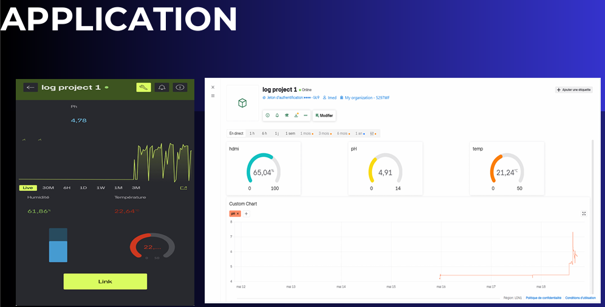
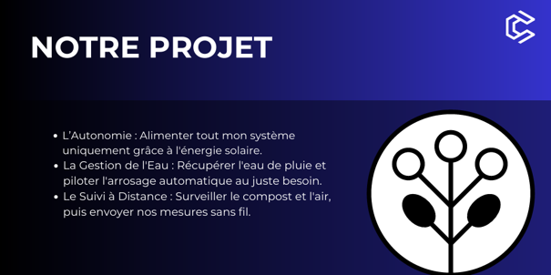

Projet d’étude · BTS CIEL
Composteur Connecté
Un système connecté pour suivre les données du compost, gérer l’arrosage et consulter les mesures à distance.

01 · Le concept
Un compost suivi par la donnée
Le projet vise à rendre le compost plus autonome et plus facile à surveiller. Les informations recueillies par les capteurs peuvent être consultées sur un tableau de bord, afin de suivre l’évolution du système.
- Autonomie énergétique
Alimenter le système grâce à l’énergie solaire. - Gestion de l’eau
Récupérer l’eau de pluie et piloter l’arrosage selon le besoin. - Suivi à distance
Surveiller le compost et transmettre les mesures sans fil.
02 · La conception
De l’électronique au programme
Le schéma présente les principaux éléments reliés à la carte : alimentation, écran, capteurs et communication.

03 · Le développement
Mesures et traitement des données
Le programme embarqué récupère les mesures des capteurs, les traite puis les affiche localement et sur le tableau de bord. Le code fourni montre notamment l’utilisation de l’ESP32, de Blynk, de LoRa et d’un écran LCD.

04 · Le suivi
Un tableau de bord à distance
L’interface rassemble les dernières valeurs et leur évolution, pour suivre les paramètres du compost en un coup d’œil.

En résumé
Un projet mêlant plusieurs domaines
Ce projet d’équipe m’a permis de travailler sur l’intégration de la partie Compost et le traitement des données, au croisement de l’électronique, de la programmation embarquée et du suivi connecté.
